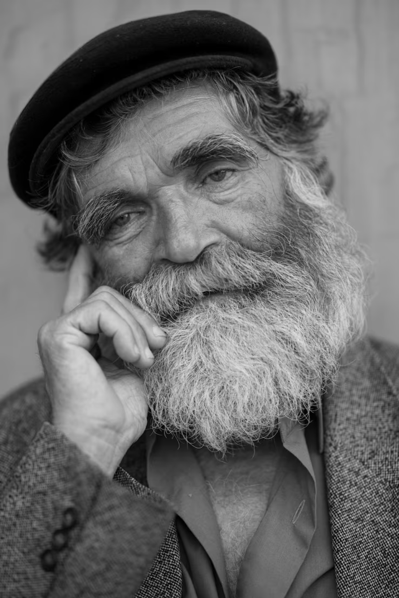
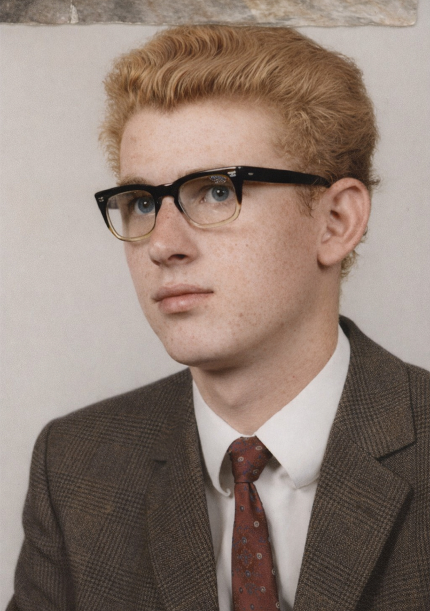
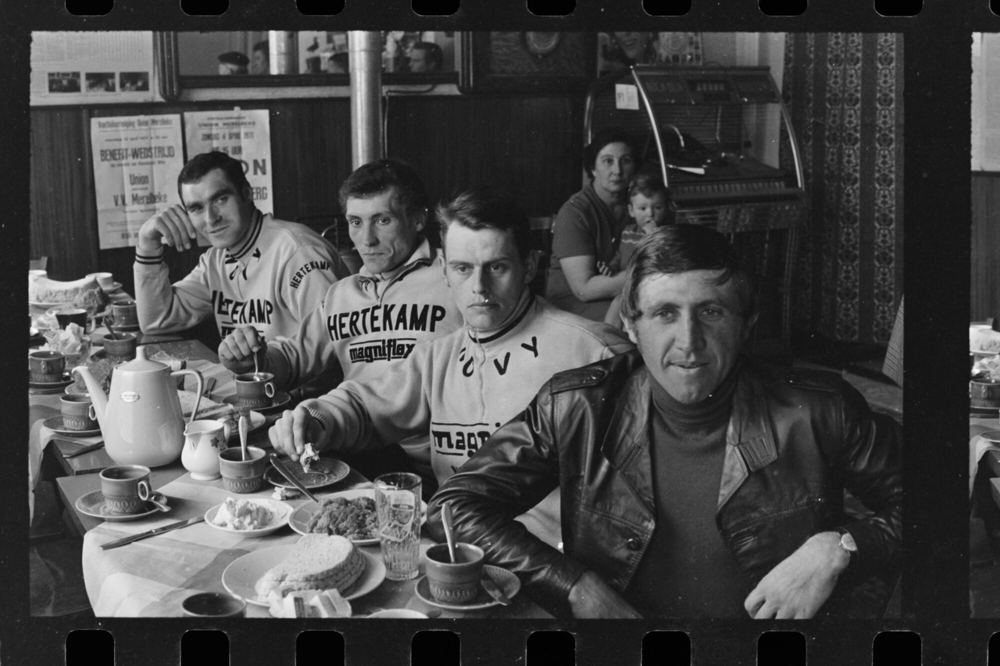
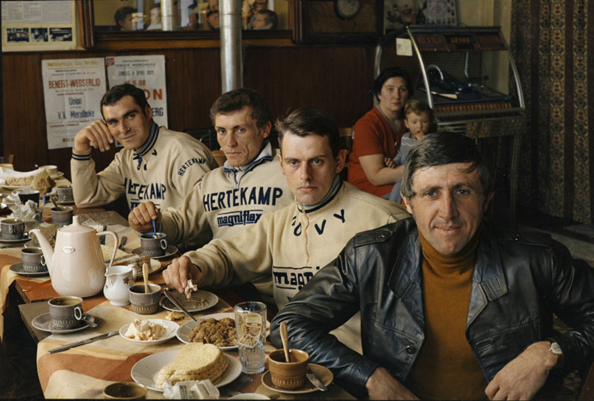
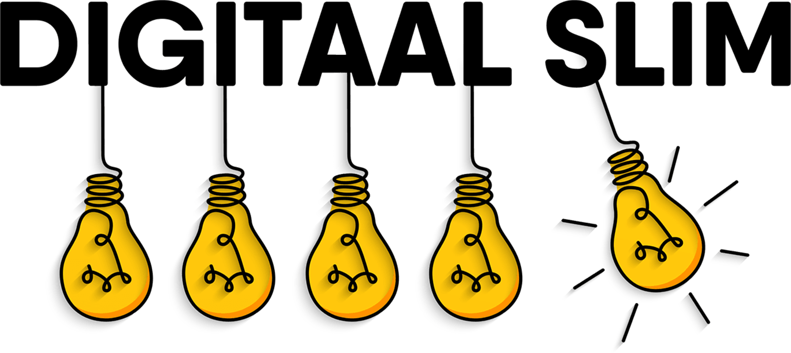

Heb je nog oude zwart-witfoto's van je ouders of grootouders? Met ChatGPT maak je er in een paar tikken een kleurenfoto van. Gratis, op je iPad of iPhone. We laten je stap voor stap zien hoe het werkt.
Dit zijn echte resultaten, gemaakt met ChatGPT. Gratis, in minder dan een minuut.




Kleur deze zwart-witafbeelding in en geef ze een moderne, realistische look alsof ze genomen is met een recente smartphonecamera. Behoud de originele compositie, vormen en proporties van de afbeelding. Gezichten en personen moeten herkenbaar blijven en niet vervormd worden, maar lichte optimalisaties in kleur en detail zijn toegestaan. Pas kleuren, witbalans en contrast aan zodat het resultaat overeenkomt met een hedendaagse foto (realistische huidtinten, natuurlijke kleuren, subtiele HDR-look). Verbeter de beeldkwaliteit lichtjes waar nodig (zoals helderheid en kleurconsistentie), zonder de scène te veranderen of elementen toe te voegen/verwijderen. Voeg geen nieuwe objecten toe en verander geen inhoud van de afbeelding. Het resultaat moet eruitzien alsof deze scène vandaag gefotografeerd werd met een moderne smartphone, terwijl de originele foto duidelijk herkenbaar blijft. Geef de uiteindelijke afbeelding rechtstreeks weer in de chat als een afbeelding, zonder extra tekst.
Heb je niet meteen een zwart-witfoto bij de hand? Sla een van onderstaande foto's op en test het zelf.
Op een iPad of iPhone: houd je vinger op de foto en tik op "Voeg toe aan Foto's".
Op een Mac: klik met de rechtermuisknop en kies "Bewaar afbeelding als...".
Als lid van DigitaalSlim Plus+ krijg je toegang tot al onze cursussen en video's. Alles wat we ooit gemaakt hebben en alles wat er in de toekomst bij komt. Daar voegen we nu ook deze stappenplannen aan toe.
Je krijgt ook toegang tot onze gloednieuwe community, waar leden vragen stellen en wij daar duidelijke antwoorden op geven.
Wat je vandaag hebt gezien is een voorproefje. Binnenkort kun je je aanmelden. Hou je mailbox in de gaten.

Dit was een DigitaalSlim Stappenplan. Vond je dit een fijne manier om iets nieuws te leren? Laat het ons weten!
Geef je meningDuurt minder dan een minuut.